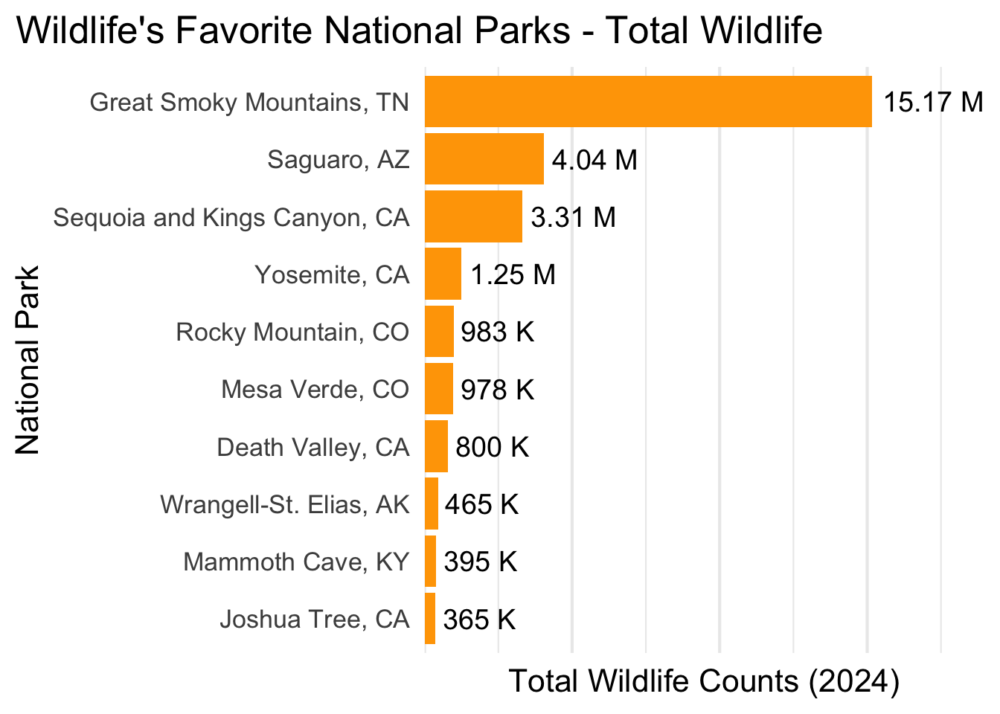

library(duckdb)
library(dbplyr)
library(DBI)
library(tidyverse)
library(scales)
library(ggbump)America’s Favorite National Parks Query
EDS-213 Final Project
My Query:
For my query I will be using my database on National Park Popularity Database to explore which parks are the most popular with both humans and wildlife.
My Data:
- NPS Species Occurrence from NPSpecies: https://github.com/frankiethull/NPSpecies
- NPS Visitation Data from NPS Visitor Use Statistics Dashboard: https://www.nps.gov/subjects/socialscience/visitor-use-statistics-dashboard.htm
My Questions:
- Which parks are favored by humans?
- Which parks are favored by wildlife?
- Do humans and wildlife have any favorites in common?
Set Up Workspace
Read in Data
file.copy(
from = "data/clean/national_parks.duckdb",
to = "data/clean/national_parks_analysis.duckdb",
overwrite = TRUE)[1] TRUEconn <- dbConnect(duckdb::duckdb(), dbdir = "data/clean/national_parks_analysis.duckdb", read_only = FALSE)Queries:
1) Identify Top 10 Most Popular Parks for Humans
# Identify Top 10 Most Popular Parks for Humans
top_human <- dbGetQuery(conn, "
-- select fields of interest
SELECT
ID,
FullName,
Region,
State,
-- sum total visits
SUM(RecreationVisits) AS TotalVisits
FROM NP_Visits
-- join with NP key using ID
JOIN NP_Key USING (ID)
GROUP BY ID, FullName, Region, State
-- select top 10
ORDER BY TotalVisits DESC
LIMIT 10;
")Plot Top 10 Most Popular Parks for Humans
# Plot Top 10 Most Popular Parks for Humans
top_human_plot <- top_human |>
# Prep x labels
mutate(ParkLabel = paste0(FullName, ", ", State))|>
# Create barplot
ggplot(aes(x = TotalVisits,
y = reorder(ParkLabel, TotalVisits))) +
geom_col(fill = "orange") +
# Add x labels
geom_text(aes(label = label_number(scale = 1e-9,
suffix = " M",
accuracy = 0.01)(TotalVisits)),
hjust = -0.1,
size = 5) +
scale_x_continuous(expand = expansion(mult = c(0, 0.25))) +
labs(title = "Human's Favorite National Parks",
x = "Total Visits (2024)",
y = "National Park") +
theme_minimal(base_size = 16) +
theme(plot.title.position = "plot",
panel.grid.major.y = element_blank(),
axis.text.x = element_blank())
top_human_plot2) Identify Top 10 Most Popular Parks for Wildlife by Total Species Count
# Identify Top 10 Most Popular Parks for Wildlife by Total Species Count
top_wildlife <- dbGetQuery(conn, "
-- select fields of interest
SELECT
NP_Key.ID,
NP_Key.FullName,
NP_Key.Region,
NP_Key.State,
-- sum total observations
SUM(NP_Species_History.Observations) AS TotalAnimals
FROM NP_Species_History
-- join with NP key using ID
JOIN NP_Key ON NP_Species_History.ParkCode = NP_Key.ID
GROUP BY NP_Key.ID, NP_Key.FullName, NP_Key.Region, NP_Key.State
-- select top 10
ORDER BY TotalAnimals DESC
LIMIT 10;
")Plot Top 10 Most Popular Parks for Wildlife by Total Species Count
# Plot Top 10 Most Popular Parks for Wildlife by Total Species Count
top_wildlife_plot <- top_wildlife |>
# Prepare x object labels
mutate(
ParkLabel = paste0(FullName, ", ", State),
LabelFormatted = case_when(
TotalAnimals >= 1e6 ~ paste0(round(TotalAnimals / 1e6, 2), " M"),
TotalAnimals >= 1e3 ~ paste0(round(TotalAnimals / 1e3), " K"),
TRUE ~ as.character(TotalAnimals))) |>
# Create bar plot
ggplot(aes(x = TotalAnimals, y = reorder(ParkLabel, TotalAnimals))) +
geom_col(fill = "orange") +
# Add x labels
geom_text(aes(label = LabelFormatted),
hjust = -0.1,
size = 5) +
scale_x_continuous(
expand = expansion(mult = c(0, 0.25))) +
labs(
title = "Wildlife's Favorite National Parks - Total Wildlife",
x = "Total Wildlife Counts (2024)",
y = "National Park") +
theme_minimal(base_size = 16) +
theme(
plot.title.position = "plot",
panel.grid.major.y = element_blank(),
axis.text.x = element_blank())
top_wildlife_plot
- Identify Top 10 Most Popular Parks for Wildlife by Unique Species Count
# Identify Top 10 Most Popular Parks for Wildlife by Unique Species Count
top_unique_species <- dbGetQuery(conn, "
-- select fields of interest
SELECT
NP_Key.ID,
NP_Key.FullName,
NP_Key.Region,
NP_Key.State,
-- count total unique (distinct) species
COUNT(DISTINCT NP_Species_History.TaxonCode) AS SpeciesCount
FROM
NP_Species_History
-- join with NP key using ID
JOIN NP_Key ON NP_Species_History.ParkCode = NP_Key.ID
GROUP BY NP_Key.ID, NP_Key.FullName, NP_Key.Region, NP_Key.State
-- select top 10
ORDER BY SpeciesCount DESC
LIMIT 10;")Plot Top 10 Most Popular Parks for Wildlife by Unique Species Count
# Plot Top 10 Most Popular Parks for Wildlife by Unique Species Count
top_unique_species_plot <- top_unique_species |>
mutate(ParkLabel = paste0(FullName, ", ", State))|>
ggplot(aes(x = SpeciesCount, y = reorder(ParkLabel, SpeciesCount))) +
geom_col(fill = "orange") +
geom_text(aes(label = label_comma()(SpeciesCount)),
hjust = -0.1,
size = 5) +
scale_x_continuous(expand = expansion(mult = c(0, 0.25))) +
labs(
title = "Wildlife's Favorite National Parks - Most Unique Species",
x = "Total Unique Species (2024)",
y = "National Park") +
theme_minimal(base_size = 16) +
theme(plot.title.position = "plot",
panel.grid.major.y = element_blank(),
axis.text.x = element_blank())
top_unique_species_plot# --- Find where humans and wildlife have favorites in common ----
# Get unique park names for each dataset
park_names <- top_human$FullName
total_wildlife_names <- top_wildlife$FullName
unique_wildlife_names <- top_unique_species$FullName
# Find where they match
in_all_three <- list(Reduce(intersect, list(park_names, total_wildlife_names, unique_wildlife_names)))
human_and_total <- list(intersect(park_names, total_wildlife_names))
human_and_unique <- list(intersect(park_names, unique_wildlife_names))
print("Favorite parks across all three queries (humans, total wildlife, unique species):")[1] "Favorite parks across all three queries (humans, total wildlife, unique species):"print(in_all_three[[1]])[1] "Great Smoky Mountains" "Rocky Mountain" print("Favorite parks with both humans and total wildlife observations:")[1] "Favorite parks with both humans and total wildlife observations:"print(human_and_total[[1]])[1] "Great Smoky Mountains" "Yosemite" "Rocky Mountain" print("Favorite parks with both humans and unique wildlife species:")[1] "Favorite parks with both humans and unique wildlife species:"print(human_and_unique[[1]])[1] "Great Smoky Mountains" "Rocky Mountain" "Olympic"